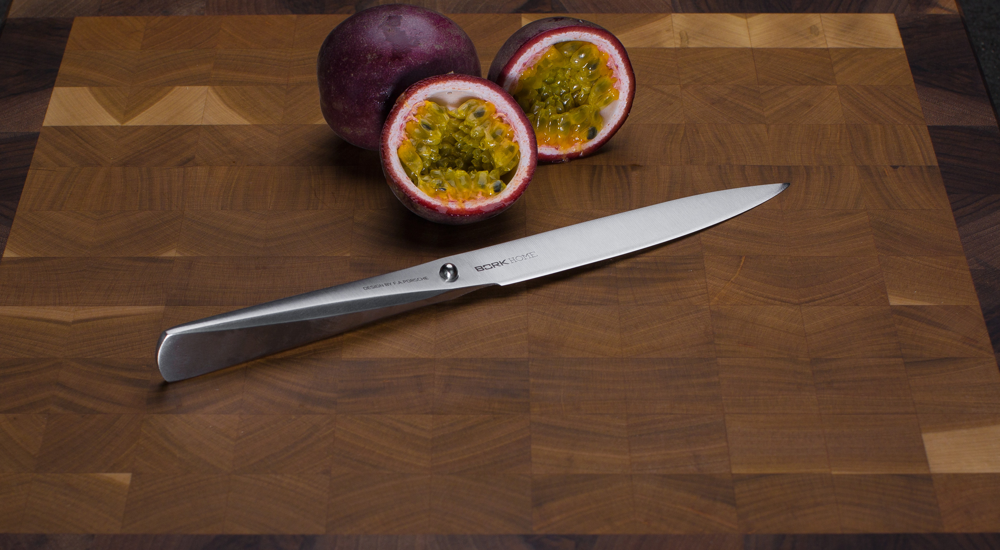
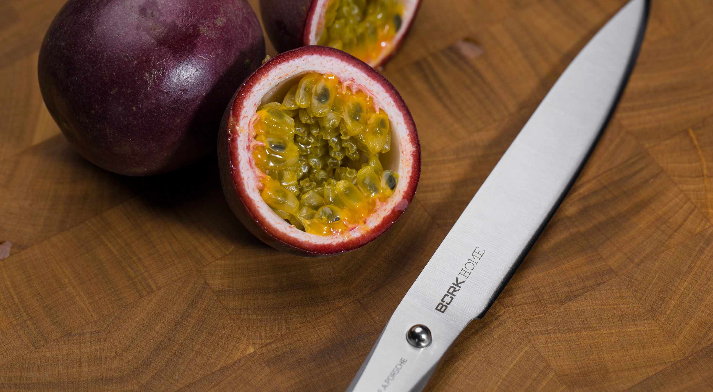

Универсальный нож BORK HN505
Универсальный нож — это самый популярный нож на любой кухне, название говорит само за себя - он нужен ежеминутно при готовке.
Такой нож не имеет каких-либо характерных особенностей и предназначен для грубой резки картофеля и подобных овощей.
Им удобно чистить и резать небольшие овощи или фрукты: лук, редис, перец, яблоко.
Многофункциональный нож длиной 12 см. создан без единого шва для гарантии гигиеничного и максимально комфортного использования.
Благодаря специальному способу затачивания изделие дольше остается острым.
Нож для чистки овощей BORK HN506 полностью изготовлен из японской высококачественной нержавеющей стали AISI 301.
Дизайн ножа выполнен студией Porsche Design.
Серия ножей была разработана вместе с топ-шеф- поварами из разных стран. Дизайн ножа основан на методах работы профессиональных поваров, которые часто используют свои ножи под разными углами резки.
Ручка и лезвие полностью сливаются друг с другом, образуя единое целое. Только шарик из нержавеющей стали сигнализирует о разделении, а также является упором для указательного и большого пальцев.
Необычный дизайн в сочетании с продуманной эргономикой делает ножи BORK уникальным дополнением вашей кухни и признанным инструментом более чем 200 шеф-поваров Германии.